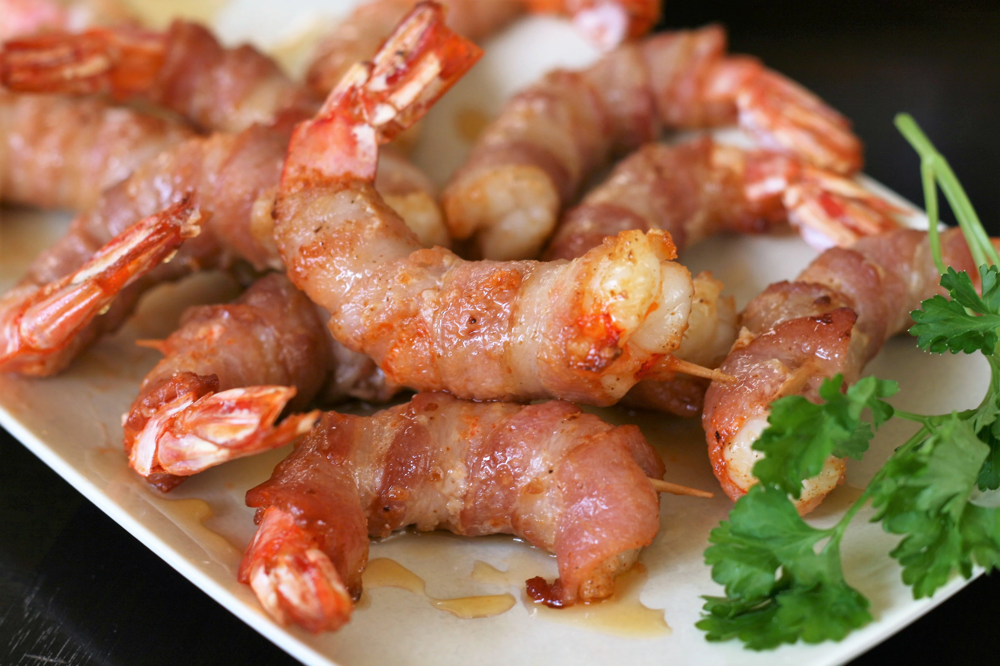

Air fried shrimp appetizer

Recepie Description
This is a recepie for the best air fried shrimp you have tried yet. They are fun and quite easy to make and they are big on flavor
Nutritional info (per serving)
- 241 calories
- protein 29.8 grams
- carbohydrates 9.1 grams
- fat 8.9 grams
- cholesterol 233.4 miligrams
- sodium 761.4 miligram
General info
- Prep time: 10 minutes
- Cook: 7 minutes
- Additional: 25 minutes
- Servings: 4
Ingredients
- 16 jumbo Shrimp, fresh, raw, jumbo (11-15)
- ¾ teaspoon Cajun seasoning
- 8 strips thin sliced bacon, cut in half
- 16 toothpicks
- 2 tablespoons hot honey
Steps
- Place shrimp on a plate and sprinkle both sides with Cajun seasoning. Wrap each shrimp with 1 narrow strip of bacon and fasten with a toothpick. Refrigerate for 25 to 30 minutes
- Preheat the air fryer to 400 degrees F (200 degrees C)
- Air-fry shrimp for 3 minutes. Flip and continue cooking until bacon is lightly crispy, 4 to 5 minutes more. You may have to do 2 batches depending on the size of your air fryer
- Remove shrimp to a plate and drizzle with hot honey. Serve immediately, being watchful of any toothpicks